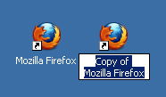
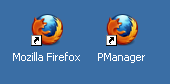
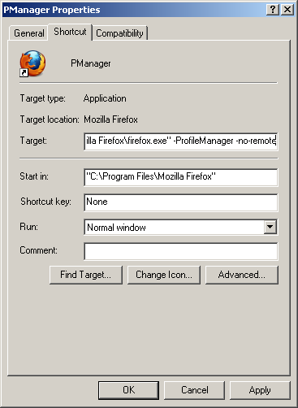
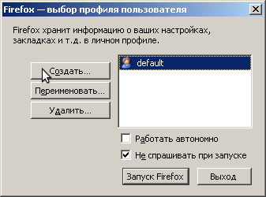
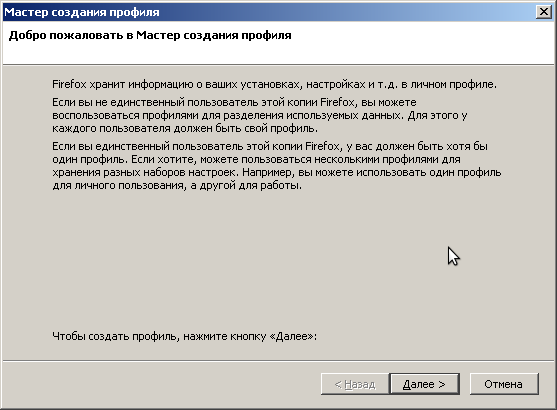
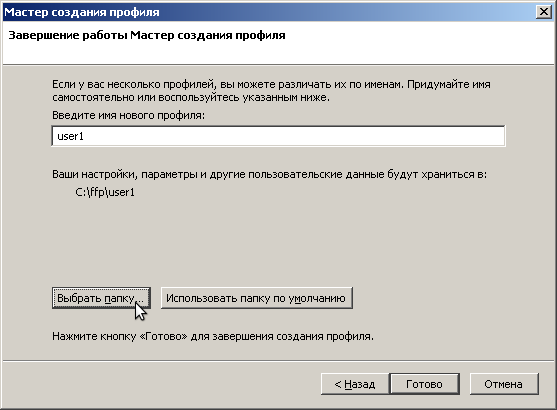
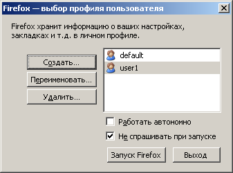
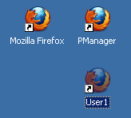
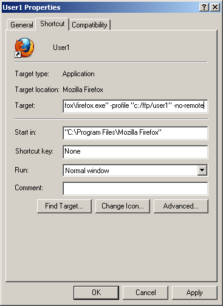

Как играть несколькими персонажами?
В Firefox есть интересный инструмент, под названием ProfileManager,
который позволяет запускать FireFox под разными профилями.
Нет - это не те профили которые учетные записи в Windows.
Это профили браузера. Каждый из них может быть настроен по своему.
Каждый из них имеет свои Cookies. И это поможет нам играть в FF в несколько окон без особых лишних хлопот.
Однако разобраться всеже придется

Для начала скопируем ярлык Файрфокса

Назовем копию ну например PManager

Откроем свойства ярлыка и допишем -ProfileManager -no-remote как показано на скрине

Запустим ярлык PManager. Должно открытся такое окно
Нажмем "Создать". Перед нами появится "Мастер создания профиля"


На этом скрине выбирем имя профиля
Например user1
И обязательно "Выбрать папку"
Рекомендую подобрать простой и корткий путь
В этой папке будут хранится данные профиля
Для каждого профиля папка своя
Я указал для примера c:/ffp/user1
Подразумевая что другие пользователи будут
c:/ffp/user2 c:/ffp/user3 итд

Наш новый профиль готов
Теперь помимо профиля default повялся наш новый user1
Создайте себе столько профилей сколько вам нужно

Еще раз скопируем оригинальный ярлык
Назовем его например User1

Откроем его свойства. На этот раз допишем -profile "c:/ffp/user1" -no-remote
Теперь данный ярлык будет открывать FF с профилем user1
Таким образом создайте столько ярлыков сколько вам нужно пользователей
Либо вы можете открывать пользоватлей через менеджер профайлов. (В нашем случае ярлык PManager)
Кому как удобнее =)
Помните что новый профиль абсолютно чистый. Поэтому на каждый профиль вам нужно будет
отдельно установить Плгун, чтобы играть в Смутные Времена.